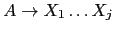

Sig: Definición Dirigida por la Sup: Análisis Sintáctico Ascendente en Ant: Acciones en Medio de Con:
Recuerde que el orden en que se evalúan los fragmentos de código es el de un recorrido primero-profundo del árbol de análisis sintáctico. Mas específicamente, considerando a las acciones como hijos-hoja del nodo, el recorrido que realiza un esquema de traducción es:
1 sub esquema_de_traduccion {
2 my $node = shift;
3
4 for my $child ($node->children) { # de izquierda a derecha
5 if ($child->isa('ACTION') {
6 $child->execute;
7 }
8 else { esquema_de_traduccion($child) }
9 }
10 }
Obsérvese que, como el bucle de la línea 4 recorre a los hijos de izquierda a derecha, se debe dar la siguiente condición para que un esquema de traducción funcione:
Para cualquier regla de producción aumentada con acciones, de la forma
{ action($A{b}, $X{c} X{d})}
debe ocurrir que los atributos evaluados en
la acción insertada después de  dependan de atributos y variables que fueron computadas durante
la visita de los hermanos izquierdos o de sus ancestros.
En particular no deberían depender de atributos asociados
con las variables
dependan de atributos y variables que fueron computadas durante
la visita de los hermanos izquierdos o de sus ancestros.
En particular no deberían depender de atributos asociados
con las variables
 . Ello no significa que
no sea correcto evaluar atributos de
. Ello no significa que
no sea correcto evaluar atributos de
 en esa acción.
en esa acción.
Casiano Rodríguez León